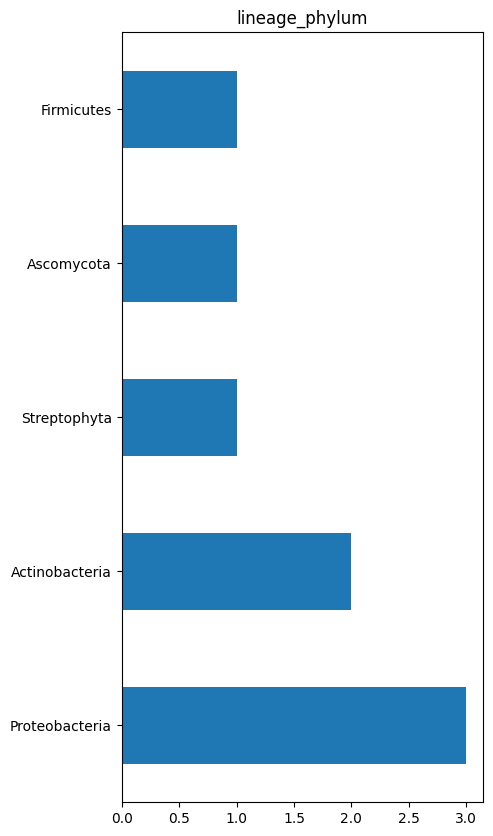
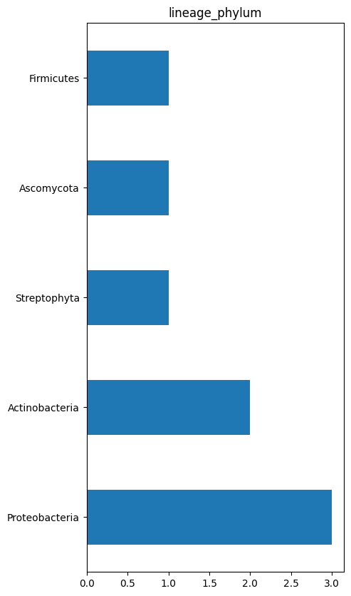

EC numbers
Contents
None
Summary sheet - als_example_ec_2_2_1_6
EC numbers#
The EC numbers found in the current data set are {'2.2.1.6'}
Taxonomic distribution#
 

Annotation distributions#
Sequence statistics for all sequences
Number of sequences : 8.0
Smallest sequnce length : 547.0
Longest sequnce length : 687.0
Average sequnce length : 598.0
Experimental data (BRENDA)#
166

Structural information#
There are 34 total structures across 3 unique sequences
Looking at the first few...
Entry is titled "Crystal structure of Arabidopsis thaliana Acetohydroxyacid synthase In Complex With A Sulfonylurea Herbicide Chlorimuron Ethyl" and was released on 2006/01/10
This entry was determined using X-ray diffraction
The authors are McCourt, J.A.Pang, S.S.King-Scott, J.Guddat, L.W.Duggleby, R.G.
Assembly information -
Non-preferred form with assembly ID 1 is a homotetramer
Preferred form with assembly ID 2 is a homodimer
Ligand : MAGNESIUM ION at position 699
Ligand : 2-[[[[(4-CHLORO-6-METHOXY-2-PYRIMIDINYL)AMINO]CARBONYL]AMINO]SULFONYL]BENZOIC ACID ETHYL ESTER at position 695
Ligand : 2-[N-CYCLOHEXYLAMINO]ETHANE SULFONIC ACID at position 696
Ligand : FLAVIN-ADENINE DINUCLEOTIDE at position 701
Ligand : ETHYL DIHYDROGEN DIPHOSPHATE at position 702
1ybh chain A has helices at residue ranges ['14-24', '35-37', '38-48', '58-74', '84-89', '90-101', '112-116', '125-131', '132-134', '142-144', '145-159', '171-176', '188-195', '200-214', '223-226', '228-240', '269-279', '290-295', '296-300', '329-344', '344-349', '352-366', '378-391', '401-410', '430-442', '453-459', '461-469', '483-494', '505-509', '515-523', '532-546', '571-575'] and strands at ['177-178', '52-53', '77-81', '29-32', '104-110', '164-170', '136-139', '12-13', '243-245', '281-285', '260-263', '217-221', '305-310', '324-327', '419-420', '447-452', '395-398', '473-479', '550-555', '527-530']
You appear to be running in JupyterLab (or JavaScript failed to load for some other reason). You need to install the 3dmol extension:
jupyter labextension install jupyterlab_3dmol
<py3Dmol.view at 0x7fdbe19d7fd0>
Entry is titled "Crystal structure of Arabidopsis thaliana Acetohydroxyacid synthase In Complex With A Sulfonylurea Herbicide, Metsulfuron methyl" and was released on 2006/01/17
This entry was determined using X-ray diffraction
The authors are McCourt, J.A.Pang, S.S.King-Scott, J.Guddat, L.W.Duggleby, R.G.
Assembly information -
Non-preferred form with assembly ID 1 is a homotetramer
Preferred form with assembly ID 2 is a homodimer
Ligand : MAGNESIUM ION at position 699
Ligand : METHYL 2-[({[(4-METHOXY-6-METHYL-1,3,5-TRIAZIN-2-YL)AMINO]CARBONYL}AMINO)SULFONYL]BENZOATE at position 695
Ligand : 2-[N-CYCLOHEXYLAMINO]ETHANE SULFONIC ACID at position 696
Ligand : FLAVIN-ADENINE DINUCLEOTIDE at position 701
Ligand : ETHYL DIHYDROGEN DIPHOSPHATE at position 702
1yhy chain A has helices at residue ranges ['14-24', '35-37', '38-48', '58-74', '84-89', '90-101', '112-116', '125-131', '142-144', '145-159', '171-176', '188-195', '200-213', '223-226', '228-240', '269-279', '290-295', '312-316', '329-343', '344-349', '352-366', '378-391', '401-410', '430-442', '453-459', '461-470', '483-494', '505-509', '515-523', '535-546', '571-575'] and strands at ['177-178', '52-53', '77-81', '29-33', '104-110', '164-170', '136-139', '12-13', '243-245', '281-285', '260-263', '217-221', '305-310', '324-327', '419-420', '447-452', '395-398', '474-479', '550-555', '527-530']
You appear to be running in JupyterLab (or JavaScript failed to load for some other reason). You need to install the 3dmol extension:
jupyter labextension install jupyterlab_3dmol
<py3Dmol.view at 0x7fdba02ca140>
Entry is titled "Crystal structure of Arabidopsis thaliana Acetohydroxyacid synthase In Complex With A Sulfonylurea Herbicide, Chlorsulfuron" and was released on 2006/01/17
This entry was determined using X-ray diffraction
The authors are McCourt, J.A.Pang, S.S.King-Scott, J.Guddat, L.W.Duggleby, R.G.
Assembly information -
Non-preferred form with assembly ID 1 is a homotetramer
Preferred form with assembly ID 2 is a homodimer
Ligand : MAGNESIUM ION at position 699
Ligand : 1-(2-CHLOROPHENYLSULFONYL)-3-(4-METHOXY-6-METHYL-L,3,5-TRIAZIN-2-YL)UREA at position 695
Ligand : ETHYL DIHYDROGEN DIPHOSPHATE at position 702
Ligand : FLAVIN-ADENINE DINUCLEOTIDE at position 701
Ligand : 2-[N-CYCLOHEXYLAMINO]ETHANE SULFONIC ACID at position 696
1yhz chain A has helices at residue ranges ['14-24', '35-37', '38-48', '58-74', '84-89', '90-101', '112-116', '125-131', '132-134', '142-144', '145-159', '171-176', '188-195', '200-214', '223-226', '228-240', '269-278', '290-295', '312-316', '329-344', '344-349', '352-366', '378-391', '401-410', '430-442', '453-459', '461-469', '483-494', '505-509', '515-523', '535-546', '571-575'] and strands at ['177-178', '52-53', '77-81', '29-33', '104-110', '164-170', '136-139', '12-13', '243-245', '281-285', '260-263', '217-221', '305-310', '324-327', '419-420', '447-452', '395-398', '473-479', '550-555', '527-530']
You appear to be running in JupyterLab (or JavaScript failed to load for some other reason). You need to install the 3dmol extension:
jupyter labextension install jupyterlab_3dmol
<py3Dmol.view at 0x7fdbe19d7fd0>
Entry is titled "Crystal structure of Arabidopsis thaliana Acetohydroxyacid synthase In Complex With A Sulfonylurea Herbicide, Sulfometuron methyl" and was released on 2006/01/17
This entry was determined using X-ray diffraction
The authors are McCourt, J.A.Pang, S.S.King-Scott, J.Guddat, L.W.Duggleby, R.G.
Assembly information -
Non-preferred form with assembly ID 1 is a homotetramer
Preferred form with assembly ID 2 is a homodimer
Ligand : MAGNESIUM ION at position 699
Ligand : METHYL 2-[({[(4,6-DIMETHYLPYRIMIDIN-2-YL)AMINO]CARBONYL}AMINO)SULFONYL]BENZOATE at position 695
Ligand : 2-[N-CYCLOHEXYLAMINO]ETHANE SULFONIC ACID at position 696
Ligand : ETHYL DIHYDROGEN DIPHOSPHATE at position 702
Ligand : FLAVIN-ADENINE DINUCLEOTIDE at position 701
1yi0 chain A has helices at residue ranges ['14-24', '35-37', '38-48', '58-74', '84-89', '90-100', '112-116', '125-131', '132-134', '142-144', '145-159', '171-176', '188-195', '200-214', '223-226', '228-240', '269-278', '290-295', '329-344', '344-349', '352-366', '378-391', '401-410', '430-442', '453-459', '461-469', '483-494', '505-509', '515-523', '535-546', '571-575'] and strands at ['177-178', '52-53', '77-81', '29-32', '104-110', '164-170', '136-139', '12-13', '243-245', '281-285', '260-263', '217-221', '305-310', '324-327', '419-420', '447-452', '395-398', '473-479', '550-555', '527-530']
You appear to be running in JupyterLab (or JavaScript failed to load for some other reason). You need to install the 3dmol extension:
jupyter labextension install jupyterlab_3dmol
<py3Dmol.view at 0x7fdbe07195a0>
Entry is titled "Crystal structure of Arabidopsis thaliana Acetohydroxyacid synthase In Complex With A Sulfonylurea Herbicide, Tribenuron methyl" and was released on 2006/01/17
This entry was determined using X-ray diffraction
The authors are McCourt, J.A.Pang, S.S.King-Scott, J.Guddat, L.W.Duggleby, R.G.
Assembly information -
Non-preferred form with assembly ID 1 is a homotetramer
Preferred form with assembly ID 2 is a homodimer
Ligand : MAGNESIUM ION at position 699
Ligand : METHYL 2-[4-METHOXY-6-METHYL-1,3,5-TRAZIN-2-YL(METHYL)CARBAMOYLSULFAMOYL]BENZOATE at position 695
Ligand : 2-[N-CYCLOHEXYLAMINO]ETHANE SULFONIC ACID at position 696
Ligand : ETHYL DIHYDROGEN DIPHOSPHATE at position 700
Ligand : FLAVIN-ADENINE DINUCLEOTIDE at position 701
1yi1 chain A has helices at residue ranges ['14-24', '35-37', '38-47', '58-74', '84-89', '90-101', '112-116', '125-131', '132-134', '142-144', '145-159', '171-176', '188-194', '200-213', '223-226', '228-240', '269-278', '290-295', '296-300', '312-316', '329-344', '344-349', '352-366', '378-391', '401-410', '430-442', '453-459', '461-469', '483-494', '505-509', '515-523', '532-534', '535-546', '571-575'] and strands at ['177-178', '52-53', '77-81', '29-32', '104-110', '164-170', '136-139', '12-13', '243-245', '281-285', '260-263', '217-221', '305-310', '324-327', '419-420', '447-452', '395-398', '473-479', '550-555', '527-530']
You appear to be running in JupyterLab (or JavaScript failed to load for some other reason). You need to install the 3dmol extension:
jupyter labextension install jupyterlab_3dmol
<py3Dmol.view at 0x7fdbb221f790>
Entry is titled "Crystal structure of Arabidopsis thaliana Acetohydroxyacid synthase In Complex With An Imidazolinone Herbicide, Imazaquin" and was released on 2006/01/17
This entry was determined using X-ray diffraction
The authors are McCourt, J.A.Pang, S.S.King-Scott, J.Guddat, L.W.Duggleby, R.G.
Assembly information -
Non-preferred form with assembly ID 1 is a homotetramer
Preferred form with assembly ID 2 is a homodimer
Ligand : MAGNESIUM ION at position 699
Ligand : 2-(4-ISOPROPYL-4-METHYL-5-OXO-4,5-DIHYDRO-1H-IMIDAZOL-2-YL)QUINOLINE-3-CARBOXYLIC ACID at position 694
Ligand : 2-(4-ISOPROPYL-4-METHYL-5-OXO-4,5-DIHYDRO-1H-IMIDAZOL-2-YL)QUINOLINE-3-CARBOXYLIC ACID at position 695
Ligand : 2-[N-CYCLOHEXYLAMINO]ETHANE SULFONIC ACID at position 696
Ligand : FLAVIN-ADENINE DINUCLEOTIDE at position 701
Ligand : THIAMINE DIPHOSPHATE at position 702
1z8n chain A has helices at residue ranges ['14-24', '35-37', '38-47', '58-73', '84-89', '90-100', '112-116', '125-130', '142-144', '145-159', '171-176', '188-193', '200-213', '223-226', '228-240', '247-250', '269-278', '290-295', '312-316', '329-344', '344-349', '352-366', '378-390', '401-410', '430-442', '453-458', '461-469', '483-494', '505-509', '515-523', '532-534', '535-546', '571-575'] and strands at ['177-178', '52-53', '77-81', '29-33', '104-110', '164-170', '136-139', '12-13', '243-245', '281-285', '260-263', '217-221', '305-310', '324-327', '419-420', '447-452', '395-398', '473-479', '550-555', '527-530']
You appear to be running in JupyterLab (or JavaScript failed to load for some other reason). You need to install the 3dmol extension:
jupyter labextension install jupyterlab_3dmol
<py3Dmol.view at 0x7fdba02c97b0>
Entry is titled "Arabidopsis thaliana acetohydroxyacid synthase in complex with monosulfuron" and was released on 2009/03/31
This entry was determined using X-ray diffraction
The authors are Guddat, L.W.Duggleby, R.G.Wang, J.-G.Li, Z.-M.
Assembly information -
Preferred form with assembly ID 1 is a homodimer
Non-preferred form with assembly ID 2 is a homotetramer
Ligand : N-[(4-methylpyrimidin-2-yl)carbamoyl]-2-nitrobenzenesulfonamide at position 695
Ligand : 2-[N-CYCLOHEXYLAMINO]ETHANE SULFONIC ACID at position 696
Ligand : MAGNESIUM ION at position 699
Ligand : 2-[(2E)-3-[(4-AMINO-2-METHYLPYRIMIDIN-5-YL)METHYL]-2-(1-HYDROXYETHYLIDENE)-4-METHYL-2,3-DIHYDRO-1,3-THIAZOL-5-YL]ETHYL
TRIHYDROGEN DIPHOSPHATE at position 700
Ligand : FLAVIN-ADENINE DINUCLEOTIDE-N5-ISOBUTYL KETONE at position 701
3e9y chain A has helices at residue ranges ['13-23', '34-36', '37-46', '57-71', '83-88', '89-99', '111-115', '124-130', '131-133', '141-143', '144-158', '170-175', '187-193', '199-213', '222-225', '227-239', '246-249', '268-278', '289-294', '295-299', '328-343', '343-348', '351-365', '377-390', '400-410', '429-441', '452-458', '461-468', '482-493', '514-522', '534-545', '570-574'] and strands at ['176-177', '51-52', '76-80', '28-31', '103-109', '163-169', '135-138', '11-12', '242-244', '280-284', '259-262', '216-220', '304-309', '323-326', '418-419', '446-451', '394-397', '472-478', '549-554', '526-529']
You appear to be running in JupyterLab (or JavaScript failed to load for some other reason). You need to install the 3dmol extension:
jupyter labextension install jupyterlab_3dmol
<py3Dmol.view at 0x7fdbe0719ed0>
---------------------------------------------------------------------------
KeyboardInterrupt Traceback (most recent call last)
Input In [12], in <cell line: 14>()
15 for pdb_id in pdb_ids:
17 display(Markdown(f'# {pdb_id} PDB entry information'))
---> 19 print(make_summary(get_entry_from_api(pdb_id, summary_url)))
21 display(Markdown(f'# {pdb_id} Ligand informtion'))
22 print(get_ligand_information(get_entry_from_api(pdb_id, ligand_url)))
Input In [3], in get_entry_from_api(pdb_id, api_url)
203 return None
205 # Make a GET call to the API URL
--> 206 get_request = requests.get(url=api_url+pdb_id)
208 if get_request.status_code == 200:
209 # If there is data returned (with HTML status code 200)
210 # then return the data in JSON format
211 return get_request.json()
File ~/opt/anaconda3/envs/asr_curation/lib/python3.10/site-packages/requests/api.py:75, in get(url, params, **kwargs)
64 def get(url, params=None, **kwargs):
65 r"""Sends a GET request.
66
67 :param url: URL for the new :class:`Request` object.
(...)
72 :rtype: requests.Response
73 """
---> 75 return request('get', url, params=params, **kwargs)
File ~/opt/anaconda3/envs/asr_curation/lib/python3.10/site-packages/requests/api.py:61, in request(method, url, **kwargs)
57 # By using the 'with' statement we are sure the session is closed, thus we
58 # avoid leaving sockets open which can trigger a ResourceWarning in some
59 # cases, and look like a memory leak in others.
60 with sessions.Session() as session:
---> 61 return session.request(method=method, url=url, **kwargs)
File ~/opt/anaconda3/envs/asr_curation/lib/python3.10/site-packages/requests/sessions.py:529, in Session.request(self, method, url, params, data, headers, cookies, files, auth, timeout, allow_redirects, proxies, hooks, stream, verify, cert, json)
524 send_kwargs = {
525 'timeout': timeout,
526 'allow_redirects': allow_redirects,
527 }
528 send_kwargs.update(settings)
--> 529 resp = self.send(prep, **send_kwargs)
531 return resp
File ~/opt/anaconda3/envs/asr_curation/lib/python3.10/site-packages/requests/sessions.py:645, in Session.send(self, request, **kwargs)
642 start = preferred_clock()
644 # Send the request
--> 645 r = adapter.send(request, **kwargs)
647 # Total elapsed time of the request (approximately)
648 elapsed = preferred_clock() - start
File ~/opt/anaconda3/envs/asr_curation/lib/python3.10/site-packages/requests/adapters.py:440, in HTTPAdapter.send(self, request, stream, timeout, verify, cert, proxies)
438 try:
439 if not chunked:
--> 440 resp = conn.urlopen(
441 method=request.method,
442 url=url,
443 body=request.body,
444 headers=request.headers,
445 redirect=False,
446 assert_same_host=False,
447 preload_content=False,
448 decode_content=False,
449 retries=self.max_retries,
450 timeout=timeout
451 )
453 # Send the request.
454 else:
455 if hasattr(conn, 'proxy_pool'):
File ~/opt/anaconda3/envs/asr_curation/lib/python3.10/site-packages/urllib3/connectionpool.py:703, in HTTPConnectionPool.urlopen(self, method, url, body, headers, retries, redirect, assert_same_host, timeout, pool_timeout, release_conn, chunked, body_pos, **response_kw)
700 self._prepare_proxy(conn)
702 # Make the request on the httplib connection object.
--> 703 httplib_response = self._make_request(
704 conn,
705 method,
706 url,
707 timeout=timeout_obj,
708 body=body,
709 headers=headers,
710 chunked=chunked,
711 )
713 # If we're going to release the connection in ``finally:``, then
714 # the response doesn't need to know about the connection. Otherwise
715 # it will also try to release it and we'll have a double-release
716 # mess.
717 response_conn = conn if not release_conn else None
File ~/opt/anaconda3/envs/asr_curation/lib/python3.10/site-packages/urllib3/connectionpool.py:449, in HTTPConnectionPool._make_request(self, conn, method, url, timeout, chunked, **httplib_request_kw)
444 httplib_response = conn.getresponse()
445 except BaseException as e:
446 # Remove the TypeError from the exception chain in
447 # Python 3 (including for exceptions like SystemExit).
448 # Otherwise it looks like a bug in the code.
--> 449 six.raise_from(e, None)
450 except (SocketTimeout, BaseSSLError, SocketError) as e:
451 self._raise_timeout(err=e, url=url, timeout_value=read_timeout)
File <string>:3, in raise_from(value, from_value)
File ~/opt/anaconda3/envs/asr_curation/lib/python3.10/site-packages/urllib3/connectionpool.py:444, in HTTPConnectionPool._make_request(self, conn, method, url, timeout, chunked, **httplib_request_kw)
441 except TypeError:
442 # Python 3
443 try:
--> 444 httplib_response = conn.getresponse()
445 except BaseException as e:
446 # Remove the TypeError from the exception chain in
447 # Python 3 (including for exceptions like SystemExit).
448 # Otherwise it looks like a bug in the code.
449 six.raise_from(e, None)
File ~/opt/anaconda3/envs/asr_curation/lib/python3.10/http/client.py:1374, in HTTPConnection.getresponse(self)
1372 try:
1373 try:
-> 1374 response.begin()
1375 except ConnectionError:
1376 self.close()
File ~/opt/anaconda3/envs/asr_curation/lib/python3.10/http/client.py:318, in HTTPResponse.begin(self)
316 # read until we get a non-100 response
317 while True:
--> 318 version, status, reason = self._read_status()
319 if status != CONTINUE:
320 break
File ~/opt/anaconda3/envs/asr_curation/lib/python3.10/http/client.py:279, in HTTPResponse._read_status(self)
278 def _read_status(self):
--> 279 line = str(self.fp.readline(_MAXLINE + 1), "iso-8859-1")
280 if len(line) > _MAXLINE:
281 raise LineTooLong("status line")
File ~/opt/anaconda3/envs/asr_curation/lib/python3.10/socket.py:705, in SocketIO.readinto(self, b)
703 while True:
704 try:
--> 705 return self._sock.recv_into(b)
706 except timeout:
707 self._timeout_occurred = True
File ~/opt/anaconda3/envs/asr_curation/lib/python3.10/ssl.py:1273, in SSLSocket.recv_into(self, buffer, nbytes, flags)
1269 if flags != 0:
1270 raise ValueError(
1271 "non-zero flags not allowed in calls to recv_into() on %s" %
1272 self.__class__)
-> 1273 return self.read(nbytes, buffer)
1274 else:
1275 return super().recv_into(buffer, nbytes, flags)
File ~/opt/anaconda3/envs/asr_curation/lib/python3.10/ssl.py:1129, in SSLSocket.read(self, len, buffer)
1127 try:
1128 if buffer is not None:
-> 1129 return self._sslobj.read(len, buffer)
1130 else:
1131 return self._sslobj.read(len)
KeyboardInterrupt:
General data set information#
These are the columns that are available and have at least one entry
accession
id
gene_names
gene_primary
gene_synonym
gene_oln
gene_orf
organism_name
organism_id
protein_name
sequence
xref_proteomes
lineage
cc_alternative_products
cc_sequence_caution
length
mass
ft_conflict
sequence_version
ec
cc_catalytic_activity
cc_cofactor
cc_function
kinetics
cc_pathway
temp_dependence
ph_dependence
ft_binding
annotation_score
feature_count
cc_miscellaneous
keyword
protein_existence
reviewed
cc_subunit
cc_induction
go
go_p
go_f
go_c
go_id
cc_biotechnology
cc_disruption_phenotype
cc_subcellular_location
ft_chain
ft_init_met
ft_mod_res
ft_transit
structure_3d
ft_strand
ft_helix
ft_turn
lit_pubmed_id
date_created
date_modified
date_sequence_modified
version
protein_families
ft_coiled
ft_compbias
ft_region
lineage.1
xref_araport
xref_bindingdb
xref_biocyc
xref_biogrid
xref_brenda
xref_carbonyldb
xref_cdd
xref_chembl
xref_complexportal
xref_dip
xref_disprot
xref_dnasu
xref_drugbank
xref_echobase
xref_eggnog
xref_embl
xref_ensemblbacteria
xref_ensemblfungi
xref_ensemblplants
xref_evolutionarytrace
xref_expressionatlas
xref_geneid
xref_genetree
xref_genevisible
xref_gramene
xref_hogenom
xref_inparanoid
xref_intact
xref_interpro
xref_iptmnet
xref_jpost
xref_kegg
xref_maxqb
xref_metosite
xref_mint
xref_oma
xref_orthodb
xref_panther
xref_patric
xref_paxdb
xref_pdb
xref_pdbsum
xref_pfam
xref_phylomedb
xref_pir
xref_pride
xref_pro
xref_prosite
xref_proteomicsdb
xref_refseq
xref_rnact
xref_sabio_rk
xref_sgd
xref_smr
xref_string
xref_supfam
xref_tair
xref_tigrfams
xref_tuberculist
xref_unipathway
xref_veupathdb
comment_count
lineage_superkingdom
lineage_kingdom
lineage_subkingdom
lineage_phylum
lineage_subphylum
lineage_class
lineage_order
lineage_family
lineage_tribe
lineage_genus
Non_AA_Character
AA_Character
MOTIF_SPVEY
MOTIF_RFDDR
truncated_seqs
truncated_seqs_latest
Length_2
Cross_reference_InterPro_2